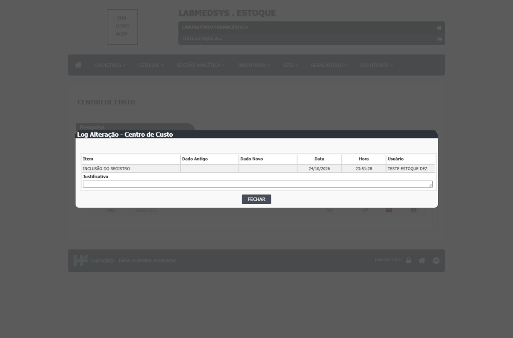
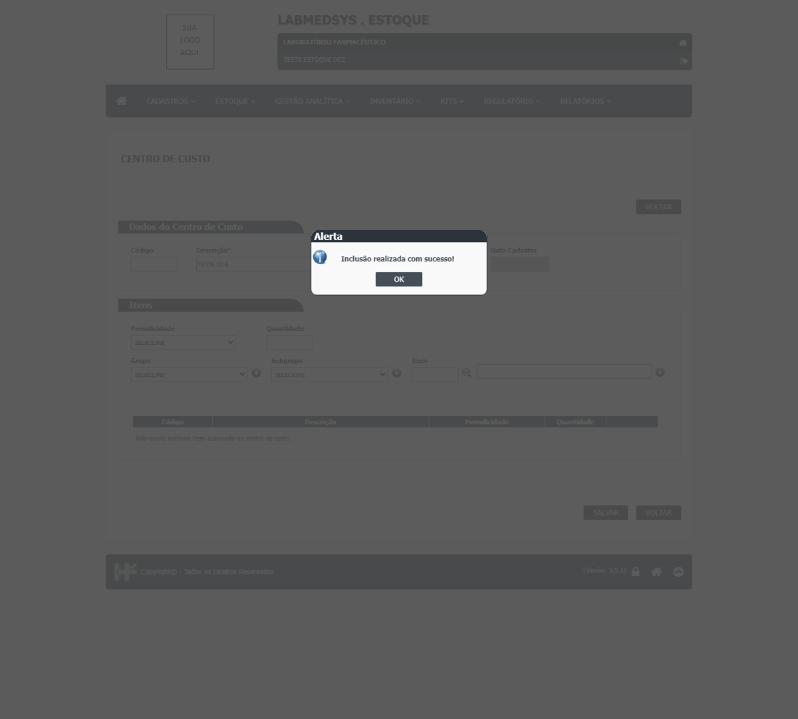

DV-EST-108 · A troca dos itens de um Centro de Custo não entra no Log
Retirei o item 00002 do centro 0001 e salvei com justificativa ("Alteração realizada com sucesso!"); o Ver Log do centro mostra só: Log Alteração - Centro de Custo ; Item Dado Antigo Dado Novo Data Hora Usuário ; INCLUSÃO DO REGISTRO 24/10/2026 23:51:28 TESTE ESTOQUE DEZ ; Justificativa
Como reproduzir o erro, passo a passo
- Alterar o centro trocando um item, com justificativa, e abrir o Ver Log.
Esperado
O Log mostra qual item entrou e qual saiu do centro (quem, quando e justificativa), porque os itens definem o que o centro pode consumir.
Obtido
Retirei o item 00002 do centro 0001 e salvei com justificativa ("Alteração realizada com sucesso!"); o Ver Log do centro mostra só: Log Alteração - Centro de Custo ; Item Dado Antigo Dado Novo Data Hora Usuário ; INCLUSÃO DO REGISTRO 24/10/2026 23:51:28 TESTE ESTOQUE DEZ ; Justificativa
Evidência (captura da tela)

DV-EST-107 · Centro de Custo do Estoque aceita nome repetido (e descarta os números digitados no nome)
TESTE CC E10 foi gravado como "TESTE CC E" (números descartados sem aviso). Digitar o mesmo nome de novo foi aceito, com ou sem números: a lista ficou com 0001 e 0003 "TESTE CC E" e 0002 e 0004 "TESTE CC LINHA".
Como reproduzir o erro, passo a passo
- Incluir TESTE CC E10 sem código; depois digitar o nome TESTE CC LINHA 2.
- Incluir de novo o mesmo nome e depois o mesmo código.
Esperado
Nome repetido é recusado ("Já existe um centro de custo cadastrado com o nome informado.") e o que se digita é o que se grava.
Obtido
TESTE CC E10 foi gravado como "TESTE CC E" (números descartados sem aviso). Digitar o mesmo nome de novo foi aceito, com ou sem números: a lista ficou com 0001 e 0003 "TESTE CC E" e 0002 e 0004 "TESTE CC LINHA".
Evidência (captura da tela)
